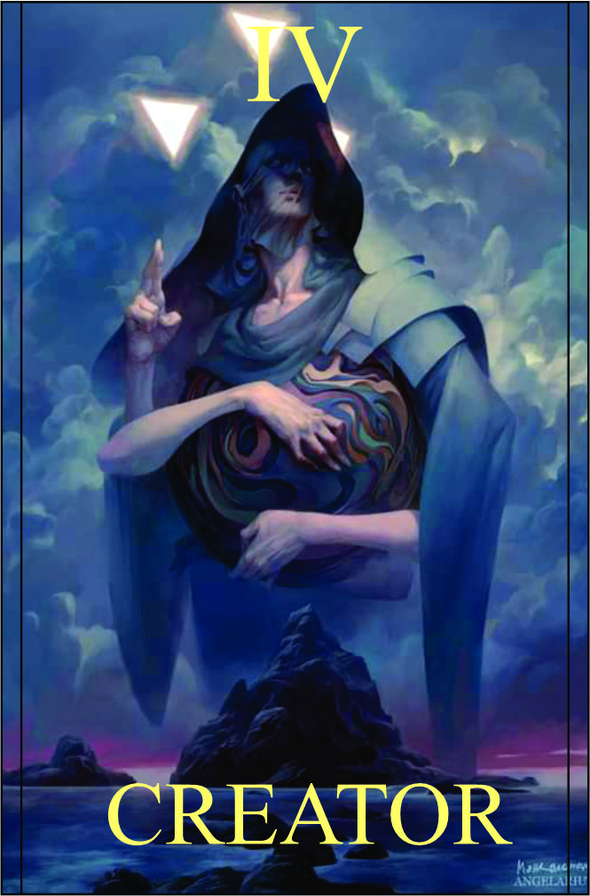

Criador
Têndencia: Neutro
Passiva:
Manifestação Cósmica:
Você possui o poder da criação e a capacidade de materializar objetos e estruturas através do cosmo. Sua conexão com a energia cósmica permite que você visualize e manipule a matéria ao seu redor, transformando pensamentos em realidade. Essa habilidade especial permite que você crie diferentes objetos e estruturas para auxiliar nas batalhas e na resolução de problemas.
Legado 1 - Construção Celestial:
Utilizando seu poder da criação, você materializa uma estrutura celestial imponente, como uma torre, muralha ou escudo, que pode ser usada para proteção ou bloquear o avanço inimigo. Essa construção é resistente e oferece cobertura para você e seus aliados.
Valor da defesa da criação: 2d6
Condição:
Deve ser usada em um local amplo e aberto. Podendo conjurar somente 3 vezes.
Legado 2 - Projeto Personalizado
Com sua habilidade de materialização, você pode criar um objeto personalizado para uma situação específica. Pode ser uma arma especial, uma ferramenta de suporte ou qualquer outro objeto que você necessite. Esse objeto possui características únicas e pode ser usado para vantagem estratégica durante o combate.
Dano: Inteligência + Consciência
Condição para ativar a habilidade:
Deve ser usada em conjunto com um objeto específico que você visualiza
Legado 3 - Alteração de Realidade:
Ao canalizar sua energia cósmica, você pode alterar a realidade ao seu redor, manipulando e reconfigurando os elementos naturais ou artificiais presentes. Isso pode incluir a criação de obstáculos, a modificação da topografia do terreno, ou a criação de armadilhas para surpreender seus inimigos. Essa habilidade é especialmente útil para criar vantagens táticas e desorientar seus oponentes.
Conversar com mestre.
Condição para ativar a habilidade:
Deve ser usada em um ambiente com elementos naturais ou artificiais.
Legado 4 - Forja Estelar:
Utilizando seu poder da criação e a energia cósmica, você convoca uma forja estelar, um local de intensa energia cósmica capaz de criar armas e equipamentos poderosos. Durante um curto período de tempo, você pode materializar armas celestiais para si mesmo e para seus aliados, proporcionando um aumento significativo de poder e habilidades especiais temporárias.
Conversar com mestre
Condição para ativar a habilidade:
Deve ser usada em um local onde você possa visualizar o céu aberto.
Importante: As habilidades desse personagem são altamente versáteis, permitindo a criação de estratégias personalizadas em diferentes situações. A manipulação da matéria e a criação de objetos fornecem uma ampla gama de possibilidades para se adaptar ao combate e superar desafios. A criatividade e o pensamento estratégico são essenciais para explorar todo o potencial dessas habilidades.